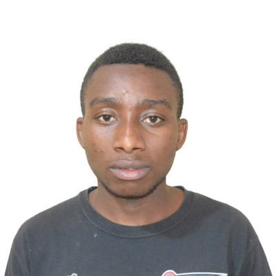
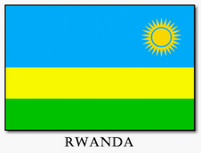

TUYIZERE Niyogisubizo Abdon | WDD 130

Hello! My name is TUYIZERE Niyogisubizo Abdon and I am from Kigali, Rwanda,
i like to watch movies, listen to music and i enjoy basketball and i think
that school will bless my life so that i will become great in techinology.
RWANDA

Officially the Republic of Rwanda is a landlocked country in the Great Rift Valley of Central Africa, where the African Great Lakes region and Southeast Africa converge. Located a few degrees south of the Equator, Rwanda is bordered by Uganda, Tanzania, Burundi, and the Democratic Republic of the Congo. It is highly elevated, giving it the soubriquet "land of a thousand hills", with its geography dominated by mountains in the west and savanna to the southeast, with numerous lakes throughout the country. The climate is temperate to subtropical, with two rainy seasons and two dry seasons each year. Rwanda has a population of over 12.6 million living on 26,338 km2 (10,169 sq mi) of land, and is the most densely populated mainland African country; among countries larger than 10,000 km2, it is the fifth most densely populated country in the world. One million people live in the capital and largest city Kigali.